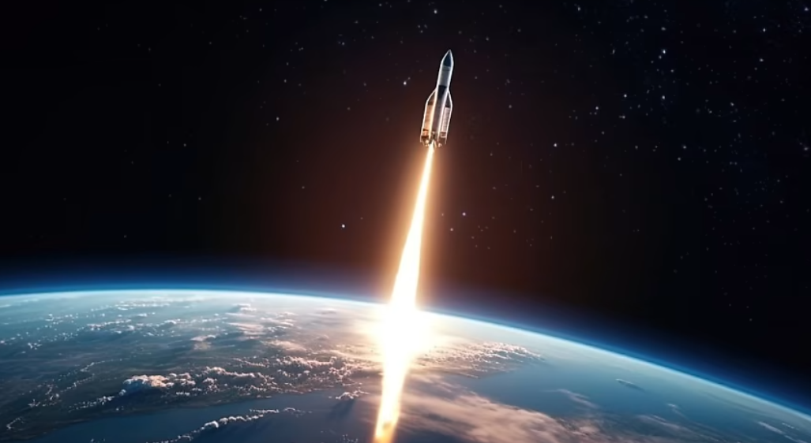

Space Exploration: The Final Frontier
Exploring the Unknown
The Journey Beyond Earth
Space exploration has fascinated humanity for centuries. From the first moon landing to the exploration of distant planets, space travel offers endless possibilities and has significantly advanced our understanding of the universe. Key milestones, such as the launch of Sputnik, the Apollo 11 mission, and the Mars rover landings, have marked major achievements in space exploration. The future holds even more promise with the development of new technologies, private space travel, and plans for missions to asteroids and beyond.
Famous Space Exploration Figures
- Neil Armstrong - First person on the Moon
- Yuri Gagarin - First human in space
- Valentina Tereshkova - First woman in space
- Elon Musk - CEO of SpaceX, private space exploration pioneer
- Stephen Hawking - Theoretical physicist and cosmologist